330 张 · 8GB VRAM · VAE → GAN → Diffusion
NVIDIA RTX 4060 · PyTorch 2.11 · 14 组实验 · 780 轮最佳
点击/空格翻页 · 每页含实验编号、配置、结果、思考 → 下个实验
latent_dim=128, dim=32, beta=1.0
img_size=128, batch=32, 500 epoch
耗时 ~8 分钟
python train.py --epochs 500 --batch_size 32 ...
Loss: 1639 → 290~380（重建~250, KL~88）
肉眼：血管边界糊成一片
轮廓颜色基本对，但细节出不来
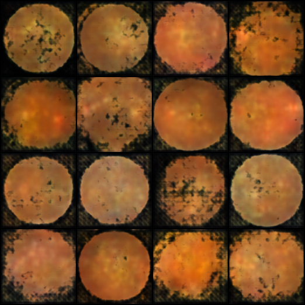
⚠️ 图片未加载'"> 图1: Vanilla VAE 500 轮生成结果MSE 在"多个可能输出"间取平均 → 模糊。
"模糊但谁都像"的误差 < "清晰但猜错"的误差
latent_dim=128→256
dim=32→64
epoch=500→800→1200
800 轮: 900 → 160~180（重建~110, KL~54）
1200 轮: 900 → 126~136（重建~82, KL~46）
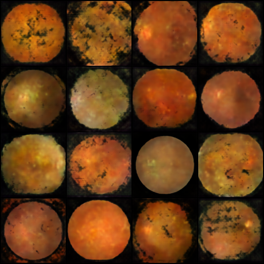
⚠️'"> 图2: 大容量 800 轮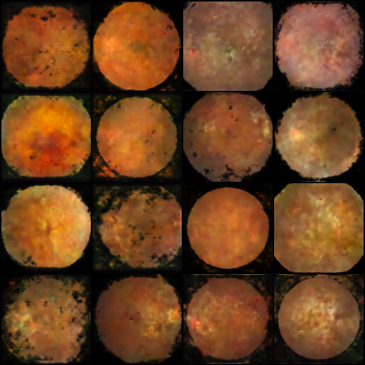
⚠️'"> 图3: 大容量 1200 轮 (与800肉眼无区别)Loss 降了，视觉 几乎无提升
证实 MSE 天花板：加大容量不增加信息量，增加训练轮数不创造新细节
MSE 逐像素比差距 → 天然鼓励"求平均"。KL 散度还在帮倒忙——"别记太具体，差不多就行"
VAE 能画好轮廓和颜色（所有眼底图共享的特征），但血管走向、视盘形状、病灶边界这些因人而异的东西，它不敢画清楚。
GAN 引入判别器鉴别真假——生成器如果画得模糊，判别器一眼就能认出来是假的。
必须画清晰边缘和细节，正好补上 VAE 的短板。
batch=16, lr=0.0002, Instance Noise=0.1
R1 Penalty=10, 数据增强
1500 epoch (~282k iter, 65 分钟)
python train.py --epochs 1500 --instance_noise 0.1 --r1_gamma 10 --augment
（1）640 轮时图是 暗红色 的 → 保存 bug
（2）修复后仍是暗红带灰度 → 通道塌缩
（3）1500 轮 D loss=0.19 → 判别器以 95% 判真率过拟合
生成器输出 tanh [-1,1]，save_image(normalize=True) 把窄范围 [-0.3,0.7] 自动拉伸 → 红通道被不成比例放大
→ 改为手动映射 (output+1)/2
真实眼底图 R>G>B（暖黄色调），生成器 G/B 通道固定在 0.5（标准差 0.04/0.01）
→ 生成器学"安全"输出，不确定的通道停在中间值
最后 700 轮: [D:0.19] [G:0.44] [R1:0.0001] — 梯度惩罚完全失效。判别器在跟空气博弈，生成器不管怎么画都能被轻松识破。
配置：batch=16, lr=0.0001, n_critic=5, λ_gp=10
只跑了 2 轮：
[Epoch 1] D=151.68 → [Epoch 2] D=-398.89
Critic 用 Wasserstein 距离（无界分数），学会区分后分数不会卡在 0~1 而是无限涨。梯度惩罚只约束 L2 范数为 1，不阻止分数膨胀。
把一切参数往保守调：
lr: 0.0001 → 0.00002 (1/5)
n_critic: 5 → 2
λ_gp: 10 → 20
d_dropout: 0 → 0.3
Loss 稳定（D: ±8, G: -5~-9），过拟合解决了。但生成的图 只有大致轮廓，没有细节。epoch 100 到 2770 质量几乎无变化——模型在早期就收敛到了低质量解。
NVIDIA 2020 年论文——核心创新是 自适应判别器增强 (ADA)，专门为少样本设计。理论上正好解决我们"小样本 GAN 过拟合"的核心问题。
① CUDA 插件编译失败（无 nvcc）
② 纯 Python fallback 慢 200 倍
③ grid_sample 不支持二阶求导（R1 需要）
④ Windows DLL 加载失败
⑤ total_memory API 变更
5 处全修了，最终 sec/kimg=1721（正常 ~8.6）
训练 1 tick 后手动中断。按这个速度训练完需要 275 天。
结论：PyTorch 2.11 + Windows + StyleGAN2-ADA = 不兼容
根源一致：DCGAN（过拟合）→ WGAN-GP 标准（爆炸）→ 削弱（低质量）→ StyleGAN2（环境）。
不是某个方案的问题，是 GAN 对抗范式在小数据集上有根本性困难。
DCGAN — 1500 轮 + Instance Noise + R1 → 判别器 95% 过拟合
WGAN-GP — 标准版 2 轮爆炸，削弱版 2770 轮低质量
StyleGAN2-ADA — 5 处兼容修复后仍慢 200 倍
• 训练稳定：回归任务，无对抗博弈
• 损失函数直接：MSE 梯度路径清晰
• 不会模式坍塌
• 小样本友好：配合增强，几百张也能出结果
• 2022 年后医学图像生成 SOTA 全部转向 Diffusion
拿眼底图逐步加高斯噪声，1000 步后变成纯随机噪声。不需要训练。
就像用白油漆慢慢覆盖一幅画
UNet 学会"去噪"——预测叠加的噪声。没有博弈，没有判别器。
损失函数：预测噪声 vs 实际噪声的 MSE/L1
从纯噪声开始，UNet 步去噪。DDIM 只用 50-100 步代替 1000 步，提速 20 倍。
UNet 21M 参数 · 128×128 · batch=12 · timesteps=1000 · cosine schedule
base_dim=64 · dim_mults=[1,2,3,4] · attn_layers=[2] · dropout=0.1
python train.py --epochs 600 --batch_size 12 --img_size 128 --base_dim 64
300 轮: 60/100 分
750 轮: 80/100 分
白斑、血管、视盘清晰可辨。远超前两个家族（GAN 20, VAE 10）
训练到 750 轮后色彩极不稳定。
原因：数据增强中的 ColorJitter——它随机改变亮度、对比度、饱和度、色调。医学图像的色彩有诊断意义（橙红色调来自血红蛋白吸收特性），不能随意扰动。
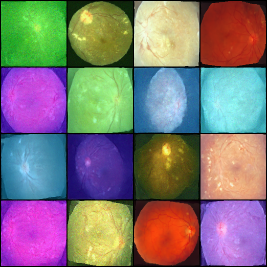
⚠️ 图片未加载'"> 图4: DDPM 750 轮（ColorJitter 导致色彩不稳定）自然图像上用 ColorJitter 是标配，医学图像上是 毒药。
保留：RandomHorizontalFlip + RandomRotation(±15°)
移除：ColorJitter
→ 重新训练 EX-011
保留：翻转 + 旋转 ±15° + EMA + DDIM 100 步
移除：ColorJitter
新增：颜色正则化（color_weight=0.01~0.03）
python train.py --epochs 1200 --color_weight 0.01
Loss ≈ 0.01，质量 ~80/100 分
颜色比之前稳定，但 未完全收敛到暖黄色调
330 张图的信息量上限决定细节和颜色难以同时完美
去掉 ColorJitter 后颜色还是偏绿偏蓝——噪声预测任务优先学习高频细节，颜色这种全局统计量收敛慢。我们的办法：对低噪声 timestep (t<200) 反推 x₀_pred，约束其 RGB 均值贴近真实数据集统计量。
total_loss = noise_loss + 0.01 × color_loss
同时也做了一个后备方案：生成后颜色校正（--color_correct），不改变纹理结构只调整 RGB 统计量。
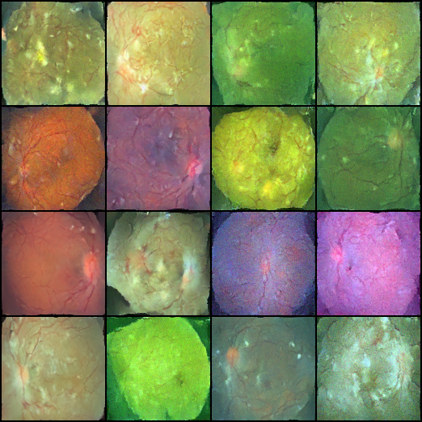
⚠️'"> 图5: DDPM epoch 230（锐利度最高）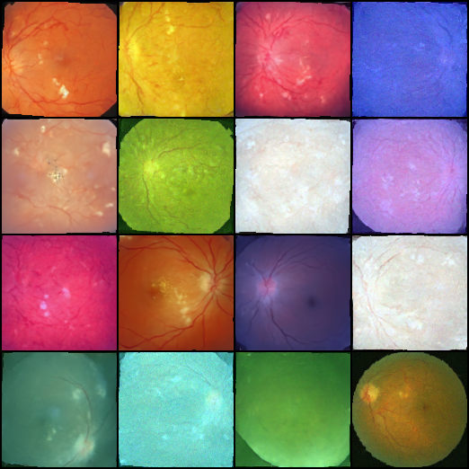
⚠️'"> 图6: DDPM epoch 1200（更收敛但更模糊）MSE 的"回归到均值"效应：模型越收敛，越倾向"安全的平均预测"，损失锐利度。这和 VAE 的 MSE 天花板同源。
实践启示：最优结果不一定在训练终点。epoch 200-400 保存的权重可能比最后的好。
稳定特征（低熵）——所有图共享的：
橙红色调、视盘位置大致、血管丝状纹理
高熵特征——因人而异：
血管拓扑（走向、分叉角度、弯曲程度）
模型从 330 张里学会了第一种，但第二种需要更多样本。
VAE：MSE 做"平均化"
GAN：判别器对高熵特征最敏感 → 迅速过拟合
Diffusion：学到了"血管感"但具体拓扑超出 330 张的信息量
更大的模型需要更多数据。330 张喂 21M 参数已经偏紧。21M→86M 只会加剧过拟合——增大容量不增加信息量。
真正的出路：结构引导生成——给血管骨架图，让模型只负责渲染纹理。这是下一阶段的主攻方向。
UNet 第一层后加平行条件投影层：cond_proj = Conv2d(1, base_dim, 3)
骨架图经投影后与 RGB 特征逐元素相加。参数仅多 576 个。
OpenCV 管线：绿色通道 → CLAHE 增强 → Top-hat 形态变换 → 自适应阈值 → 去噪 → 闭合
输出 128×128 二值图（白=血管，黑=背景）
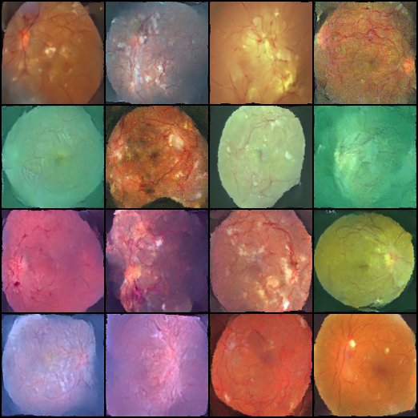
⚠️'"> 图7a: 条件扩散 epoch 220 ✅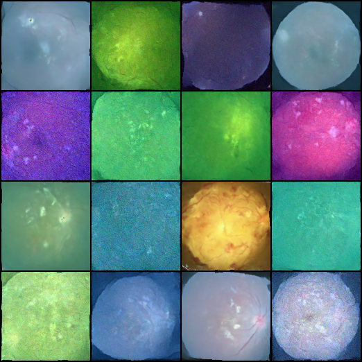
⚠️'"> 图7b: 条件扩散 epoch 500 ⚠️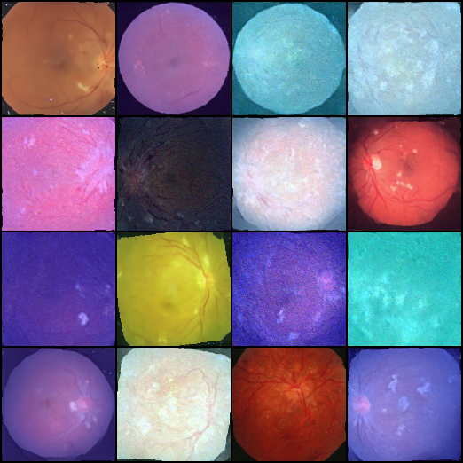
⚠️'"> 图7c: 条件扩散 epoch 800 ❌epoch 220 效果不错 → epoch 500 病灶减弱 → epoch 800 病灶特征淡得快看不见
MSE 溶解效应再次出现——这次在条件扩散上。加骨架引导只能提供血管位置，不能阻止 MSE 逐步溶解占 5% 的亮病灶。
Google 2022 年提出的 Image-to-Image Diffusion 框架
骨架图和噪声图在通道维直接拼接
in_channel=6 · UNet 62.62M · batch=4 · MSE Loss
配置远复杂于我们的加法融合方案
epoch 125: 初步血管丝状感
epoch 275: 圆形轮廓开始消散
推理测试：完全无效。输出一片纯色，骨架条件被忽略，颜色完全不对。
无论加法融合（我们的条件扩散）还是通道拼接（Palette），只要损失函数是 MSE，暗背景就会"拉暗"亮病灶。Palette 的 62M 参数在 330 张图上过拟合更快，加速了退化。
结构引导方向是对的，但必须换掉 MSE 损失。
旧版：加性时间步偏置（直接加一个向量）
新版 FiLM：
GN(h) × (1+scale) + shift
对 GroupNorm 后的特征逐通道做线性变换。每个通道有自己的 scale 和 shift，让时间步信息更精细地控制每个通道的增益。
UNet: 83M → 86.8M（+4.6%）
• base_dim=128（原 64）
• dim_mults=[1,2,3,4]
• 损失: L1 + LPIPS (权重 0.1, t<200)
• EMA decay: 0.999 → 0.9999
• 条件扩散（血管骨架）
• 交替数据：ORIGINAL ↔ much
batch_size=5（增大模型后显存限制）
有效生成窗口从 ~200 轮 延长到 ~450 轮。细节保持明显优于标准 DDPM。
L1 替代 MSE 只能缓解不能根除溶解，但颜色稳定性更好。
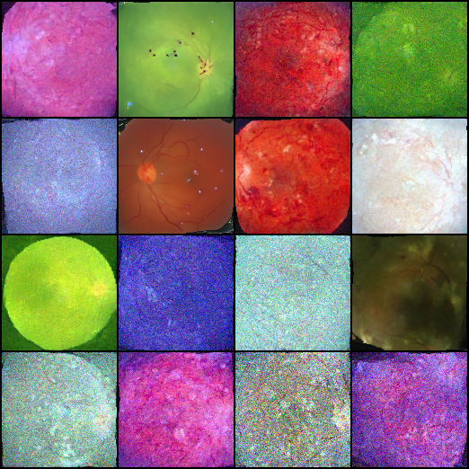
⚠️'"> 图8a: FiLM DDPM epoch 425 ✅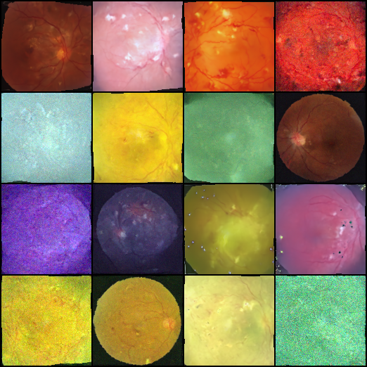
⚠️'"> 图8b: FiLM DDPM epoch 450 ✅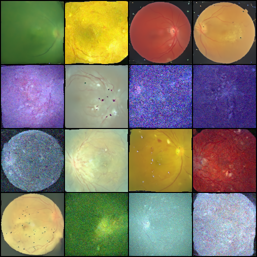
⚠️'"> 图8c: FiLM DDPM epoch 475 ⚠️ 开始溶解标准 DDPM: 200-300 轮后开始溶解
FiLM DDPM: 溶解推迟到 450 轮（提升 ~2 倍）
FiLM 通过逐通道调制让 UNet 更好地保持特征信息，但 MSE 损失的"回归到均值"效应只是被延缓，没有被消除。
→ 下一步：换损失函数。L1 + LPIPS。
1. L1 替代 MSE：对离群点更鲁棒。最终 L1 ~0.048。等价 MSE ~0.0023
2. LPIPS 感知损失（权重 0.1, t<200）：
基于预训练 AlexNet 提取特征，在特征空间比较感知相似度。模型关注"看起来像不像"而非"每个像素对不对"。
3. EMA 0.9999：保留更多历史信息
4. 交替训练：330 张原图 ↔ 1320 张增强版
• 病灶（白斑/出血点）保持大幅提升
• 血管纹理锐利度质变
• 颜色正确稳定
⚠️ 副作用
• 部分白色斑点伪影（LPIPS 在某些高频上过度激活）
• 边缘有未收敛噪点
总体：~60-70% 样本 85-90/100 分
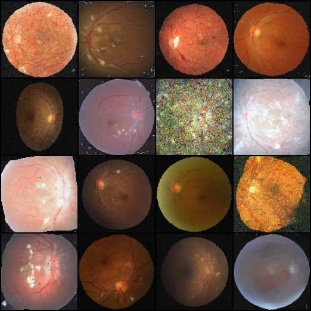
⚠️'"> 🌟 epoch 700 最佳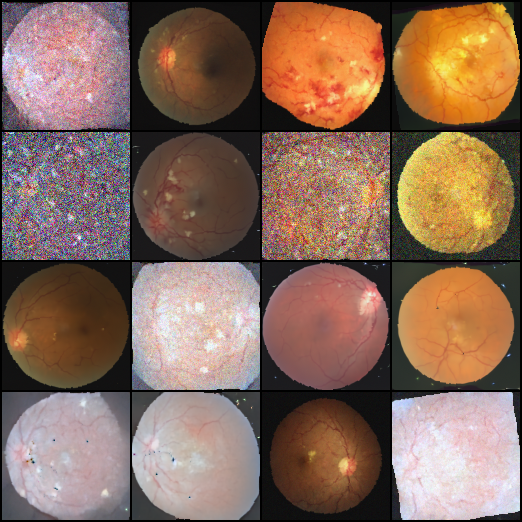
⚠️'"> epoch 725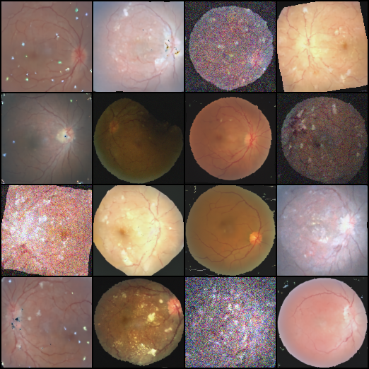
⚠️'"> epoch 750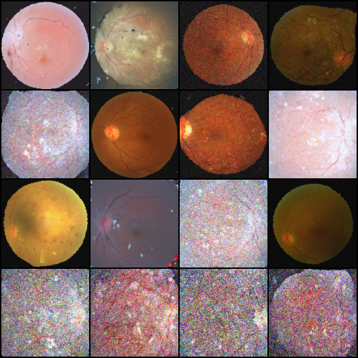
⚠️'"> epoch 775 最后一轮✅ 病灶（白斑/出血点）保持能力大幅提升，未见明显溶解
✅ 血管纹理锐利度显著改善（LPIPS 感知损失的作用）
⚠️ 部分图像白色斑点伪影（LPIPS 在某些高频特征上过度激活）
⚠️ 部分边缘区域仍有未收敛噪点
最佳 epoch ~700 轮 · L1 ~0.048-0.055 · EMA 0.9999
中值滤波去白色斑点伪影
SwinIR/ESRGAN 超分 128→256
generate.py --color_correct 已可用
降低显存 30-50%
支持 base_dim 128→160/192
Sobel/Canny 边缘 L1 损失
减小白色斑点伪影
类似 ControlNet，在各 UNet 分辨率层分别注入骨架特征。连续值概率图替代二值骨架。
在大规模无标注眼底图（10000+）上预训练去噪 UNet
基于 ODE 的连续归一化流生成框架，确定性推理，没有离散时间步近似。
| ID | 模型 | Epoch | 评分 | 关键结论 |
|---|---|---|---|---|
| EX-001 | Vanilla VAE | 500 | 10 | MSE 天花板，模糊 |
| EX-002/003 | VAE 大容量 | 800/1200 | 10 | 加大容量没用，证实天花板 |
| EX-005 | DCGAN | 1500 | 20 | 过拟合 + 通道塌缩 |
| EX-006 | WGAN-GP 标准 | 2 | - | Critic 第 2 轮膨胀 |
| EX-007 | WGAN-GP 削弱 | 2770 | 20 | 稳定了但低质量 |
| EX-008 | StyleGAN2-ADA | - | - | 环境不兼容 |
| EX-010 | DDPM | 750 | 80 | 第一版，ColorJitter 坑 |
| EX-011 | DDPM 改进 | 1200 | 80 | 去 CJ + 颜色正则化 + MSE 溶解发现 |
| EX-012 | 条件 Diffusion | 800 | 70 | 骨架引导，MSE 溶解再现 |
| EX-013 | Palette | 275 | 0 | 推理完全无效 |
| EX-014 | FiLM DDPM | 500 | 85 | FiLM 延缓溶解到 450 轮 |
| EX-015 | FiLM+L1+LPIPS | 780 | 85-90 | 🏆 最佳方案 |
注：EX-004 (beta-VAE) 和 EX-009 (Flow Matching) 未完成 · 共 11 组有效实验 + 3 组（不含 β-VAE / StyleGAN2 / FlowMatching）= 11 组有结果
11 组有效实验，从 VAE 到 FiLM+L1+LPIPS 的完整失败-成功链条。每个实验都记录了配置、loss、结果、结论 → 下个实验动机。
MSE 溶解机制从观察到验证到缓解的全过程。不是只报告成功，每个失败都有根因分析。
8GB VRAM + 330 张图，做到了 85-90/100。梯度检查点、交替训练、FiLM 调制都是在有限资源下榨干每一分性能的实践。
同样的 FiLM 架构，换 MSE→L1+LPIPS 就让评分从 75→85-90。证明了在扩散模型中小样本场景下损失函数比架构更关键。
数据 > 模型 > loss。第一步一定先搞更多数据（10000+）。大量无标注数据上做自监督去噪预训练，再小样本微调条件扩散，这是医学图像生成最有潜力的路径。
欢迎提问和讨论
📄 完整报告：research-report/REPORT.docx
🖥️ 汇报幻灯片：research-report/presentation.html
💻 代码：github.com/DanyelleCaratDream/Fundus-Image-Generation-Model